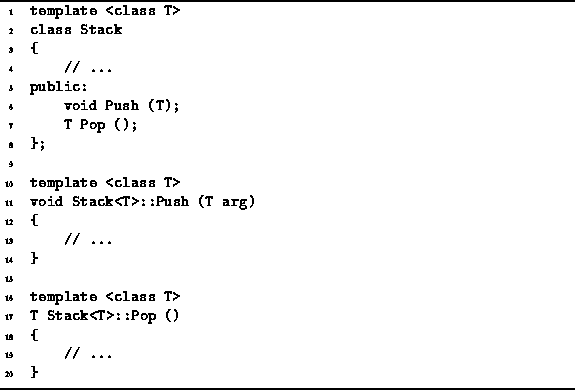

Data Structures and Algorithms
with Object-Oriented Design Patterns in C++
Data Structures and Algorithms
with Object-Oriented Design Patterns in C++In C++, templates are used to define generic functions and classes. A generic function or class is one which takes a type as an actual parameter. As a result, a single function or class definition gives rise to a family of functions or classes that are compiled from the same source code, but operate on different types.
E.g., consider the following function definition:
int Max (int x, int y)
{ return x > y ? x : y; }
The Max function takes to arguments of type int
and returns the larger of the two.
To compute the maximum value of a pair doubles,
we require a different Max function.
By using a template, we can define a generic Max function like this:
template <class T>
T Max (T x, T y)
{ return x > y ? x : y; }
The template definition gives rise
to a family of Max functions,
one for every different type T.
The C++ compiler automatically creates
the appropriate Max functions as needed.
E.g., the code sequence
int i = Max (1, 2); double d = Max (1.0, 2.0);causes the creation of two Max functions, one for arguments of type int and the other for arguments of type double.
Templates can also be used to define generic classes. E.g., consider the following class definition:
class Stack
{
// ...
public:
void Push (int);
int Pop ();
};
This Stack class represents a stack of integers.
The member functions Push and Pop are used
to insert and to withdraw an int from the stack (respectively).
If instead of ints a stack of doubles is required,
we must write a different Stack class.
By using a template as shown in Program  we can define a generic Stack class.
we can define a generic Stack class.

Program: Stack Template Definition
The required classes are created automatically by the C++ compiler as needed. E.g., the code sequence
Stack<int> s1; s1.Push (1); Stack<double> s2; s2.Push (1.0);causes the creation of two stack classes, Stack<int> and Stack<double>. This example also illustrates that the name of the class includes the actual type parameter used to create it.
 Copyright © 1997 by Bruno R. Preiss, P.Eng. All rights reserved.
Copyright © 1997 by Bruno R. Preiss, P.Eng. All rights reserved.